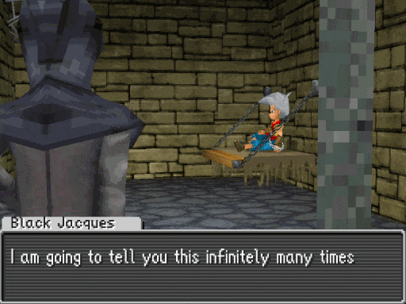
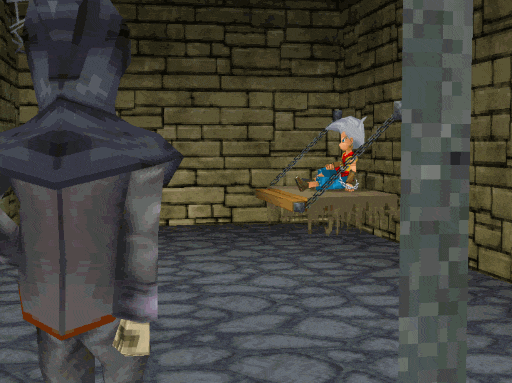

Jumps and conditionals
Jumps and conditionals are used to make cutscenes and overworld events react to player choices or game state.
- Different dialog or cutscene outcome based on a yes/no choice
- Different outcomes based on the player's gold or items
- Repeat a dialog box until the player gives the correct answer
Jumps
Jumps are a special type of instruction that instead of causing the event to move on to the next instruction after it, move the event to a specific instruction.
Consider the following example: (We've indented the instructions in this example for clarity)
StartDialog
SpeakerName "Black Jacques"
SetDialog "[0xEA]I am only going to tell you this once"
SetU32 Pool_1 0.0 Const 1.0
ShowDialog
EndDialog
In this case, the instructions run one after another:
flowchart LR
A[StartDialog] --> B[SpeakerName] --> C[SetDialog] --> D[SetU32] --> E[ShowDialog] --> F[EndDialog]
Let's add in a Jump and see how it affects what the event does:
StartDialog
SpeakerName "Black Jacques"
loop_start:
SetDialog "[0xEA]I am going to tell you this infinitely many times"
SetU32 Pool_1 0.0 Const 1.0
ShowDialog
Jump loop_start
EndDialog
Note that there are two changes here:
- The
loop_start:line before theSetDialog, these types of lines are called labels - The
Jump loop_startafter theShowDialog
The instructions will run one after another, but when the Jump instruction is reached the event will move back to the SetDialog instead of moving forward to the EndDialog. Specifically, it will go back to the SetDialog because the Jump command has the loop_start label as its first argument and the loop_start label is placed directly before the SetDialog.
flowchart LR
A[StartDialog] --> B[SpeakerName] --> C[SetDialog] --> D[SetU32] --> E[ShowDialog] --> F[Jump] --> C
This behavior where an event script repeats the same set of instructions more than once is called a loop.

This particular example will make the "I am going to tell you this infinitely many times" dialog box appear over and over again without end, trapping the game in an infinite loop.
We'll fix this in the next section.
Types of jumps
| Instruction | Description |
|---|---|
| Jump | Jumps to the specified label |
| JumpIfTrue | Jumps to the specified label if previous conditional is true |
| JumpIfFalse | Jumps to the specified label if previous conditional is false |
| JumpKeepBackPointer | Jumps to the specified label and keep track of where the following instruction is |
JumpKeepBackPointer enables jumping to a different part of the script, and jumping back using Exit.
This will be covered in an upcoming later section of the guide.
Conditionals
Conditionals allow you to control where the event will go after a jump instruction. This will enable you to make events react to player choices and game state.
Player choice & controlling loops
As shown in the previous section, we can use a Jump instruction to repeat a dialog box. Let's use a conditional to make the dialog box stop after the player selects a "No" choice.
StartDialog
SpeakerName "Black Jacques"
loop_start:
SetDialog "[0xEA]Do you want me to say this again?"
SetU32 Pool_1 0.0 Const 1.0
PromptYesNo
FloatsEq Pool_1 0.0 Const 1.0
JumpIfTrue loop_start
EndDialog
Note that there are three main changes here:
- Changes the
ShowDialogtoPromptYesNo. This both shows the dialog and gives the player a Yes or No choice, storing1.0inPool_1[0]if the player chose "Yes", or0.0if the player chose "No".- Note that like
ShowDialog,PromptYesNoalso shows the dialog advance triangle ifPool_1[0]is equal to1.0.
- Note that like
- The
FloatsEq Pool_1 0.0 Const 1.0. This is a conditional, which checks if the value inPool_1[0]is equal to1.0. - The
Jumphas been changed toJumpIfTrue. This will move the event toSetDialogif the previous conditional was true, or move the event toEndDialogif the previous conditional was false.
By adding these instructions, we have created a loop that will repeat if the player selects "Yes" and end when the player selects "No".
flowchart LR
A[StartDialog] --> B[SpeakerName] --> C[SetDialog] --> D[SetU32] --> F[PromptYesNo] --> G[FloatsEq] --> H{JumpIfTrue}
H -- Yes --> C
H -- No --> I[EndDialog]

Game state
In addition to controlling loops, conditionals enable you to have events behave differently based on game state (ex. player's gold, items, library completion, etc.).
As an example of this, let's make a script that gives the player 500 gold if they have less than 1000 gold.
Here's the script behavior we want to achieve:
flowchart LR
A[Greet player] --> B{Does player have < 1000 gold?}
B -- no --> C[Say they're doing well]
B -- yes --> D[Give player 500 gold]
C --> E[End conversation]
D --> E
As a part of this, we will use the GetPlayerGold instruction. It will set Pool_1[0] to the amount of gold the player currently has.
StartDialog
SpeakerName "Generous Individual"
SetDialog "[0xEA]How are you doing on this fine day?"
SetU32 Pool_1 0.0 Const 1.0
ShowDialog
GetPlayerGold
FloatsLess Pool_1 0.0 Const 1000.0
JumpIfTrue in_need_of_money
SetDialog "[0xEA]Seems like you're doing well for yourself!"
SetU32 Pool_1 0.0 Const 1.0
ShowDialog
Jump conversation_end
in_need_of_money:
SetDialog "[0xEA]You could be doing better.\nHere, take this and buy some ice cream!"
SetU32 Pool_1 0.0 Const 1.0
ShowDialog
SetU32 Pool_1 0.0 Const 500.0
GivePlayerGold
conversation_end:
EndDialog
Here we use JumpIfTrue to go to the in_need_of_money label if the player's gold is less than 1000. If the player has 1000 or more gold, then the script instead continues on to the "Seems like ..." dialog and uses a Jump to go to conversation_end. This results in both paths ending up at conversation_end.
Types of conditionals
| Instruction | Description |
|---|---|
| FloatsEq | Checks if two values are equal |
| FloatsNeq | Checks if two values are not equal |
| FloatsGreater | Checks if the first value is greater than the second |
| FloatsLess | Checks if the first value is less than the second |
| FloatsGreaterEq | Checks if the first value is greater than or equal to the second |
| FloatsLessEq | Checks if the first value is less than or equal to the second |